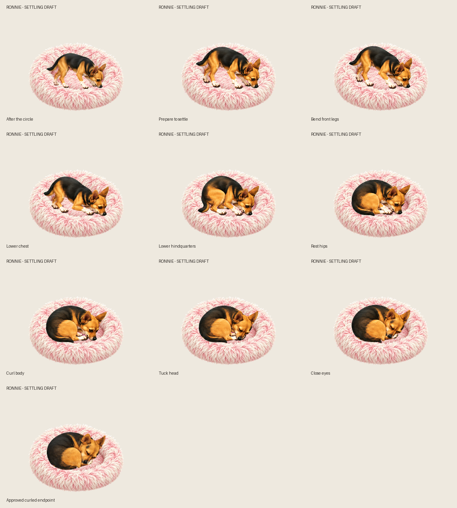
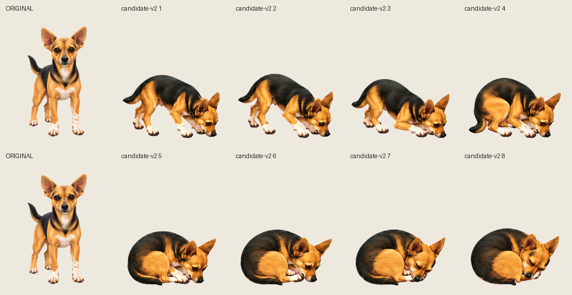

BED ENTRY · CHECKPOINT 2 OF 3
Settling into her bed
Settling movement approved. Front legs bend, her hips lower, then she curls and tucks her head. The first pose is the current circle endpoint; the final hold uses her exact approved curled sprite. The bed stays separate.
Playback stops on her approved sleeping position. Josh approved this checkpoint with the disclosed joins. The full bedtime sequence is ready for review.
Compare each stage and the endpoint

New poses beside original artwork

GIF preview · Dog-only GIF · Review findings · Library notes